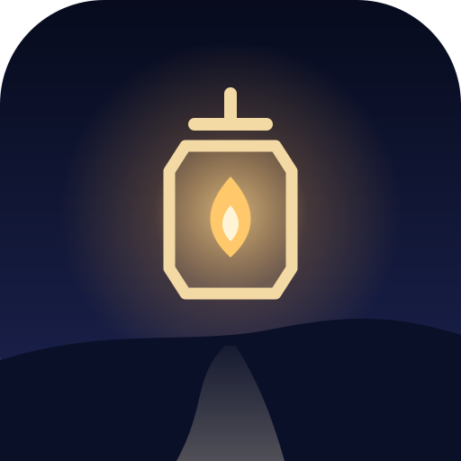

فانوسبهدست English ↓سیاست حریم خصوصی
آخرین بهروزرسانی: ۱۵ آبان ۱۴۰۵
خلاصه: فانوسبهدست هیچ دادهای از تو جمع نمیکند و به هیچ سروری نمیفرستد. حساب کاربری، ثبتنام، تبلیغ، آمارگیر و ردیاب ندارد. هر چه در بازی میسازی و ثبت میکنی فقط روی همین دستگاه میماند.
چه چیزهایی روی دستگاهت ذخیره میشود
بازی اینها را در حافظهٔ مرورگرِ همین دستگاه (localStorage) نگه میدارد تا دفعهٔ بعد از همانجا ادامه بدهی:
- مسافرهایی که میسازی: نامی که خودت انتخاب میکنی (لازم نیست نام واقعی باشد) و ظاهرشان؛
- سابقهٔ تمرین: آزمونهایی که رفتهای، نمرههایی که به ترست دادهای، پیشبینیها، ستارهها، زمانها، گامهای زندگی واقعی که ثبت کردهای، پاسخهای خودسنجی و سوگندهایت؛
- تنظیمات: زبان، صدا، کیفیت تصویر، یادآور روزانه و مانند اینها؛
- فهرستی کوتاه از آخرین خطاهای فنی (حداکثر ۲۵ مورد) برای پیدا کردن اشکال. این فهرست هم از دستگاهت بیرون نمیرود، مگر اینکه خودت آن را در بازخوردت بگذاری.
هیچکدام از اینها برای ما یا هیچکس دیگری فرستاده نمیشود.
چه چیزهایی جمع نمیشود
نشانی ایمیل، شمارهٔ تلفن، موقعیت مکانی، مخاطبان، عکس، دوربین و میکروفون. بازی هیچ کتابخانهٔ آمارگیری یا تبلیغاتیِ شخص ثالث ندارد و به سرورهای شرکتهای دیگر وصل نمیشود.
امکانات دستگاه
- اعلان: فقط اگر خودت «یادآور روزانه» را در تنظیمات روشن کنی، روزی یک بار یادآوری کوتاهی از خودِ بازی نشان داده میشود. هیچ اعلان تبلیغاتی در کار نیست و هر وقت بخواهی خاموشش میکنی.
- حسگر حرکت و لرزش: روی گوشی، چرخاندن گوشی میتواند نگاهِ صحنه را بچرخاند و لرزشی کوتاه لحظهها را حسپذیر میکند. اینها فقط هنگام بازی و روی خودِ دستگاه کار میکنند و چیزی ثبت نمیشود.
- روشن ماندن صفحه: در طول یک آزمون صفحه خاموش نمیشود.
سروری که بازی را میرساند
فایلهای بازی (کد، تصویر و صدا) از سرور میزبان دانلود میشوند. آن سرور، مانند هر وبگاهی، ممکن است برای امنیت و نگهداری، گزارشهای معمولِ دسترسی (نشانی IP، زمان، فایلِ درخواستشده و نوع مرورگر) را مدتی نگه دارد. این گزارشها به دادههای بازی تو وصل نیستند، چون آن دادهها هرگز به سرور نمیرسند.
پیوندها، پشتیبان و بازخورد
- پیوندهای بیرونی (مثل خطهای کمک یا معرفی ابزارهای سازنده) فقط وقتی باز میشوند که خودت رویشان بزنی.
- «خروجی گرفتن» در تنظیمات فایلی روی دستگاهت میسازد. اینکه آن را به کسی (مثلاً درمانگرت) بدهی یا نه، انتخاب خودت است.
- اگر برای ما ایمیل بفرستی، فقط همان چیزی را که خودت فرستادهای (نشانی ایمیلت و متن پیام) میبینیم و فقط برای پاسخ دادن و بهتر کردن بازی به کارش میبریم.
پاک کردن دادهها
از تنظیمات ← پاک کردن همهچیز روی این دستگاه همهٔ مسافرها، سابقهها و تنظیمات را پاک کن. در برنامهٔ اندروید، دادهها را موتورِ مرورگرِ گوشی برای این بازی نگه میدارد؛ برای پاک کردنِ کامل از همین گزینهٔ تنظیمات استفاده کن. چون چیزی نزد ما نیست، چیزی هم برای پاک کردن از سمت ما باقی نمیماند.
سلامت و سن
فانوسبهدست یک بازی تمرینی و آموزشی است، نه درمان و نه ابزار پزشکی؛ خودسنجیِ درون بازی تشخیص نیست. بازی برای نوجوانان و بزرگسالان ساخته شده است و بهتر است کودکانِ کوچکتر همراه یک بزرگتر بازی کنند. اگر همین حالا در بحران هستی: اورژانس اجتماعی ۱۲۳ · صدای مشاور بهزیستی ۱۴۸۰.
تغییرها و تماس
اگر این سیاست تغییر کند، همین صفحه و تاریخ بالای آن بهروز میشود. پرسشی داری؟ به info@go2game.ir بنویس.
سازنده: Amir Saraee · دربارهٔ فانوسبهدست
Privacy policy
Last updated: 6 November 2026
In short: Lanternwalk collects nothing and sends nothing to any server. There is no account, no sign-up, no ads, no analytics and no trackers. What you make and record in the game stays on this device.
What is stored on your device
The game keeps these in this device's browser storage (localStorage), so you can carry on next time:
- the travelers you make: a name you choose (it needn't be your real one) and their look;
- your practice record: trials played, the fear ratings you gave, predictions, stars, times, real-world steps you logged, self-check answers and oaths;
- settings: language, sound, graphics, the daily reminder and the like;
- a short list of the latest technical errors (25 at most) for finding bugs. It never leaves your device unless you put it in feedback yourself.
None of it is sent to us or to anyone else.
What is not collected
Email address, phone number, location, contacts, photos, camera or microphone. The game has no third-party analytics or advertising code and connects to no other company's servers.
Device features
- Notifications: only if you turn on the daily reminder in Settings — one short reminder a day from the game itself, never advertising, off whenever you like.
- Motion sensor and vibration: on a phone, turning it can turn the view, and a short buzz marks some moments. Both work only while you play, on the device, and nothing is recorded.
- Screen stays on during a trial.
The server that delivers the game
The game's files (code, pictures, sounds) are downloaded from its host. Like any website, that server may keep routine access logs (IP address, time, file requested, browser type) for a while, for security and upkeep. They are not linked to your game data, which never reaches the server.
Links, backups and feedback
- Outside links (help lines, the credits) open only when you tap them.
- Export in Settings makes a file on your device. Whether you give it to anyone, a therapist for example, is up to you.
- If you email us, we see only what you sent (your address and message) and use it only to answer and to improve the game.
Deleting your data
Settings → Erase everything on this device removes every traveler, record and setting. In the Android app the phone's browser engine keeps the data for the game, so use that same option to remove it completely. Nothing is held on our side, so there is nothing for us to delete.
Health and age
Lanternwalk is a practice and learning game, not therapy and not a medical device; its self-check is not a diagnosis. It is made for teenagers and adults; younger children should play with an adult. In crisis right now? findahelpline.com lists free lines in most countries (in Iran: 123 social emergency, 1480 Behzisti counselling).
Changes and contact
If this policy changes, this page and its date are updated. Questions: info@go2game.ir. Made by Amir Saraee · About Lanternwalk